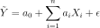
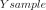
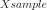
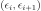
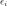
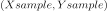
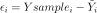
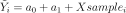

LinearModelStepwiseAlgorithm¶
-
class
LinearModelStepwiseAlgorithm(*args)¶ Class used to create a linear model from numerical samples.
Available usages:
LinearModelStepwiseAlgorithm(inputSample, basis, outputSample, minimalIndices, isForward, penalty, maximumIterationNumber)
LinearModelStepwiseAlgorithm(inputSample, basis, outputSample, minimalIndices, startIndices, penalty, maximumIterationNumber)
- Parameters
- inputSample, outputSample2-d sequence of float
The input and output samples of a model.
- basis
Basis Functional basis to estimate the trend.
- minimalIndicessequence of int
The indices of minimal model
- isForwardbool
the boolean value used for the stepwise regression method direction FORWARD and BACKWARD.
- startIndicessequence of int
The indices of start model used for the stepwise regression method direction BOTH.
- penaltyfloat
The multiple of the degrees of freedom used for the penalty of the stepwise regression method:
2 Akaike information criterion (AIC)
log(n) Bayesian information criterion (BIC)
- maximumIterationNumberint
The maximum number of iterations of the stepwise regression method.
See also
LinearModel,LinearModelResult
Notes
This class is used in order to create a linear model from numerical samples, by using the stepwise method. The linear regression model between the scalar variable
 and the
and the  -dimensional one
-dimensional one  writes as follows:
writes as follows:
where
 is the residual, supposed to follow the standard Normal
distribution.
is the residual, supposed to follow the standard Normal
distribution.Each coefficient
 is evaluated from both samples
is evaluated from both samples 
and
and is accompagnied by a confidence interval and a p-value (which tests if they are significantly different from 0.0).By default, input sample is normalized. It is possible to set Resource key (
LinearModelStepwiseAlgorithm-normalize) to False in order to discard this normalization.This class enables to test the quality of the model. It provides only numerical tests. If
 is scalar, a graphical validation test exists, that draws
the residual couples
is scalar, a graphical validation test exists, that draws
the residual couples 
, where the residual
is evaluated on the samples
:
with
. The method isVisualTest_DrawLinearModelResidual.Methods
getClassName(self)Accessor to the object’s name.
getDirection(self)Accessor to the direction.
getFormula(self)Accessor to the formula.
getId(self)Accessor to the object’s id.
getInputSample(self)Accessor to the input sample.
Accessor to the maximum iteration number.
getName(self)Accessor to the object’s name.
getOutputSample(self)Accessor to the output sample.
getPenalty(self)Accessor to the penalty.
getResult(self)Accessor to the result.
getShadowedId(self)Accessor to the object’s shadowed id.
getVisibility(self)Accessor to the object’s visibility state.
hasName(self)Test if the object is named.
hasVisibleName(self)Test if the object has a distinguishable name.
run(self)Run the algorithm.
setName(self, name)Accessor to the object’s name.
setShadowedId(self, id)Accessor to the object’s shadowed id.
setVisibility(self, visible)Accessor to the object’s visibility state.
-
__init__(self, *args)¶ Initialize self. See help(type(self)) for accurate signature.
-
getClassName(self)¶ Accessor to the object’s name.
- Returns
- class_namestr
The object class name (object.__class__.__name__).
-
getDirection(self)¶ Accessor to the direction.
- Returns
- directionint
Direction.
-
getFormula(self)¶ Accessor to the formula.
- Returns
- formulastr
Formula.
-
getId(self)¶ Accessor to the object’s id.
- Returns
- idint
Internal unique identifier.
-
getMaximumIterationNumber(self)¶ Accessor to the maximum iteration number.
- Returns
- maximum_iterationint
Maximum number of iterations.
-
getName(self)¶ Accessor to the object’s name.
- Returns
- namestr
The name of the object.
-
getPenalty(self)¶ Accessor to the penalty.
- Returns
- penaltyfloat
Penalty.
-
getResult(self)¶ Accessor to the result.
- Returns
- result
LinearModelResult Result.
- result
-
getShadowedId(self)¶ Accessor to the object’s shadowed id.
- Returns
- idint
Internal unique identifier.
-
getVisibility(self)¶ Accessor to the object’s visibility state.
- Returns
- visiblebool
Visibility flag.
-
hasName(self)¶ Test if the object is named.
- Returns
- hasNamebool
True if the name is not empty.
-
hasVisibleName(self)¶ Test if the object has a distinguishable name.
- Returns
- hasVisibleNamebool
True if the name is not empty and not the default one.
-
run(self)¶ Run the algorithm.
-
setName(self, name)¶ Accessor to the object’s name.
- Parameters
- namestr
The name of the object.
-
setShadowedId(self, id)¶ Accessor to the object’s shadowed id.
- Parameters
- idint
Internal unique identifier.
-
setVisibility(self, visible)¶ Accessor to the object’s visibility state.
- Parameters
- visiblebool
Visibility flag.